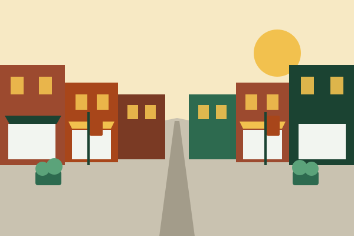

In an AI era, the local shop matters more, not less
AI is taking over the work that happens on screens. That makes the things only a real place can offer worth more: a person who knows your name, a shelf someone chose by hand, and a room where neighbors meet. We think this is the decade downtown comes back.

How Midwest downtowns emptied, and how they come back
The 1980s farm crisis cut U.S. farmland values by a third, and in Iowa by 62%. In 1985 alone, 62 farm banks failed (FDIC, History of the Eighties). Iowa estimates that one rural business closed for every four farms lost (Iowa PBS). Then came the highway strips, the big boxes and the internet. Towns near a new Walmart in Iowa lost a quarter of their sales (Stone, 1995), but only the shops selling the same things were hurt. Shops that offered something different held on (Haltiwanger, Jarmin & Krizan).
Now the tide is turning. Main Street programs reported 6,630 net new businesses in 2023 (Main Street America, self-reported), and rural America has grown again since 2020, helped by remote work (Carsey School, UNH; USDA ERS). Midwest downtowns come back one well-run business at a time. Downtown Stube is built for that business.
Office jobs are changing. Owning a shop is a real path.
Big employers are cutting layers of middle management as AI tools take on reporting, scheduling and coordination (Axios, Fortune). Those managers know how to run teams, budgets and schedules, and that is exactly what a small shop needs. Downtown Stube handles the paperwork side so their skills go into the shop floor instead.
Stores aren't dying. The good ones are winning.
Online's share of retail is back near its pre-pandemic trend, and surveyed retailers often find selling online less profitable than selling in stores. European online-only retailers averaged a 1.4% margin against 5.4% for those with stores (Treadgold & Reynolds, 2025). Independent bookstores grew to 3,783 locations in 2025, with 605 new openings (American Booksellers Association via Shelf Awareness). Amazon closed all of its bookstores in 2022 (CNBC).
Local shops build local prosperity
Counties with more locally owned businesses of 10 to 99 employees saw faster income growth, in rural and urban places alike (Fleming & Goetz, 2011). Independents also keep more of each dollar in town. Estimates of the gap vary, but it ranges from about 1.5 to 3.5 times what chains keep (Civic Economics). And of 186 independent bookshops studied, 179 regularly sent customers on to neighboring businesses (Saga et al., 2024).
The Midwest is affordable, livable and local
Nationally, a home now costs about five times household income, while several Midwest metros are among the few under three times (Harvard Joint Center for Housing Studies). Homes in many Midwest markets cost about 30% less than on the coasts (Fortune), and a 2026 analysis found that, for the first time this decade, more Americans moved into the Midwest than out (Stacker). Lower rent and a lower cost of living mean a small shop can stay open on smaller margins, and its owner can still raise a family.
A reviving downtown, up close
Antigo, Wisconsin, where Downtown Stube was built, rebuilt its downtown street for more than $6 million in 2021. Since 2011, small public grants there have drawn several times their value in private building investment (WXPR, Langlade County EDC). It isn't easy, because small towns face the steepest odds. That's why owners need tools that take the busywork off their plate, so their time goes into the people and the place.
Running one of those shops?
Downtown Stube takes the busywork off your plate so your time goes into the people and the place.